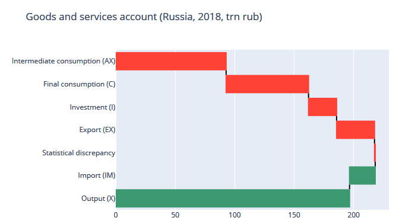

# System of national accounts (SNA)
Below is an end-to-end example of national accounts, processed
as pandas dataframe in python.
The data is for Russian Federation, 2014-2018.
import pandas as pd
import handoutWe shall need to check identities with some rounding error.
Will use `eq` function for it.
def eq(df1: pd.DataFrame, df2: pd.DataFrame, precision=0.5) -> bool:
"""Compare two dataframes by element with precision margin."""
return ((df1 - df2).abs() < precision).all()Read dataset from file.
df = pd.read_csv("sna.csv", index_col=0)Output at market prices is output at basic prices
plus tax on products less subsidy on products.
df["X"] = df.Xb + df.Tp - df.SpOutput and import are resources,
consumption, investment (I) and export are uses.
Consumption is intermediate (AX) and final (C).
resources = df.X + df.IM
uses = df.AX + df.C + df.I + df.EX
assert eq(resources, uses + df.desc)There are three ways to calculate a GDP.
gdp1 = df.X - df.AX
gdp2 = (df.C + df.I - df.IM) + df.EX + df.desc
gdp3 = df.W + df.Tf - df.Sf + df.GP
assert eq(gdp1, gdp2)
assert eq(gdp2, df.GDP)
assert eq(gdp3, df.GDP)Gross national income (GNI) is GDP and
net property and labor ("factor") income
form rest of the world (ROW).
gni = (
df.GDP
+ df.ROW_property_income_recieved
- df.ROW_property_income_paid
+ df.ROW_wage_net
)
assert eq(gni.iloc[1:,], df.GNI.iloc[1:,])Gross domestic income (GDI) is GNI
and net current (not capital) transfers
gdi = gni + df.CT_recieved - df.CT_paid
assert eq(gdi, df.GDI)
assert eq(df.C, df.HH + df.G)Savings is gross domestic income
less household and government consumption
S = gdi - (df.HH + df.G)
assert eq(S, df.S)Investment is gross fixed capital formation
and change in inventories.
I = df.GFCF + df.inv
assert eq(I, df.I)Net lending is S-I, and a balance of capital transfers
and a non-produced non-material asset aquisition (K.2).
NL = S + df.d9_recieved - df.d9_paid - I - df.k2
assert eq(NL, df.NL0)Net lending is an entry value into financial account (flow of funds).
Is contains a statistical error, later netted in flow of funds.
